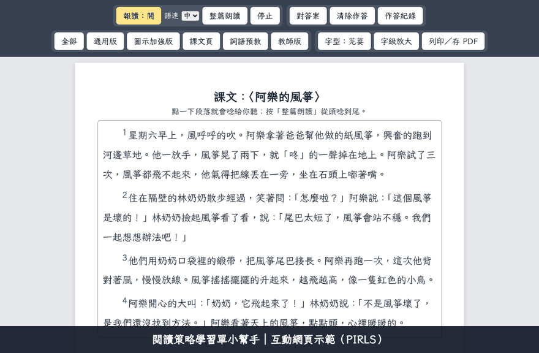

閱讀策略學習單小幫手
貼上課文、用自己的話描述學生，AI 就會依序分析並推薦閱讀策略，做出全班通用（UDL）、可報讀與線上作答的學習單，附 PDF、Word 與教師版。Claude、ChatGPT、Gemini 都能用。
- 分析文本
- 分析學生
- 判斷閱讀歷程
- 推薦策略
- UDL 調整
- 產生學習單
- 交付前自我檢查
操作示範

六種策略範例（示範課文〈阿樂的風箏〉）
怎麼安裝
最快的方式：在 Claude、ChatGPT 或 Gemini 的對話框輸入
安裝skill https://github.com/sesns365/reading-strategy-worksheet
想每次都能用，請看 GitHub 上的安裝說明（Claude 技能、ChatGPT GPT、Gemini 技能）。